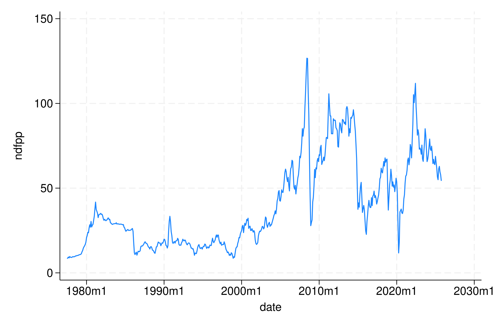
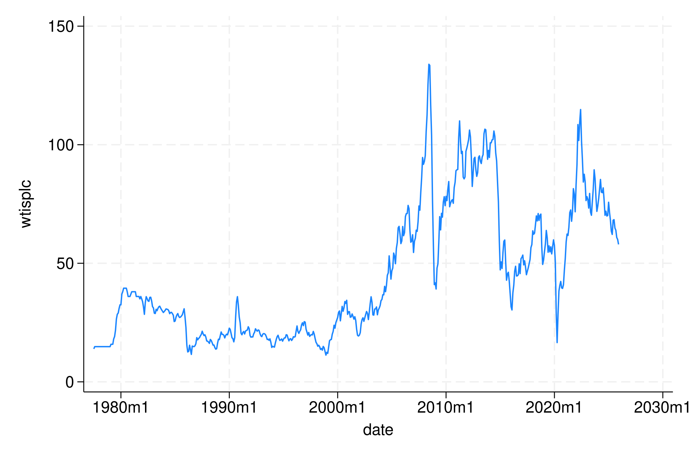
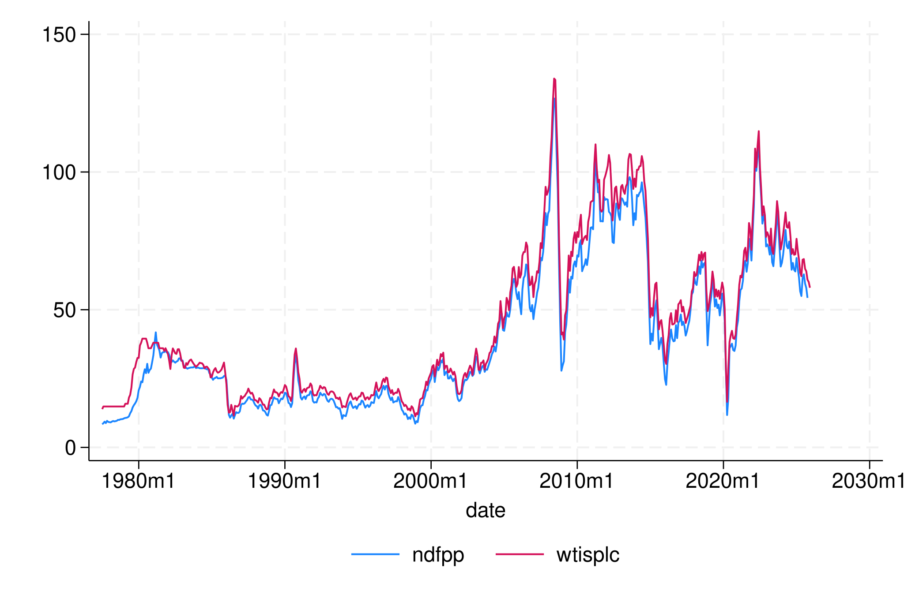
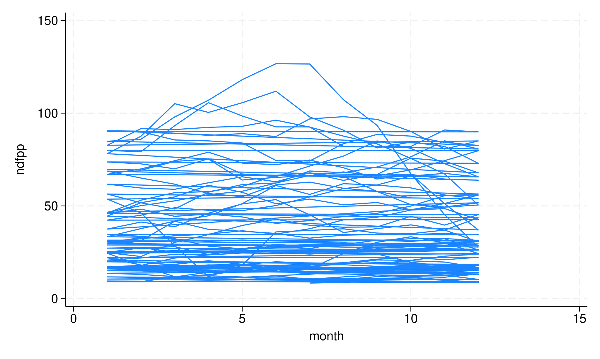
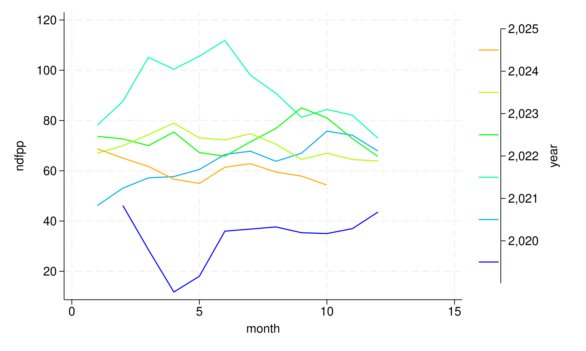

Economic Forecasting Spring 2026 Started: 26 January 2026 Updated: 26 January 2026
We did some good work last time and have made the most basic of graphics. This is a hugely important thing. Now the question is how to extend the graphics. One thing we need to consider here is that not all graphics will be important, or even relevant, to all data.
. import delimited https://raw.githubusercontent.com/flynnecon/forecasting-2026/refs/heads/main/data/oil_price_data.csv,
> clear
(encoding automatically selected: UTF-8)
(3 vars, 582 obs)
One wrinkle this time is that there is an issue reading the month automatically. This is done to allow you to see the commands needed to make this adjustment.
. gen date = tm(1977m7) + _n-1
. format date %tm
. tsset date
Time variable: date, 1977m7 to 2025m12
Delta: 1 month
. drop month
So now we have two data series in one structure. Now what do we do to get the graph? If you want a time series graph of only one of the data series it is not too different, just specify the series to chart.
. tsline ndfpp, name(ndoilprice, replace)

. tsline wtisplc, name(wtiprice, replace)

While this is alright there are times we want to look at them both. There are really good reasons for this and include:
. tsline ndfpp wtisplc, name(oilprice_combined, replace)

Long time series are fine, but often not enough for us. We need to sometimes reorganize the visual presentation of the data. Part of this can be diagnostic, but it can also be explanatory. The first aspect we deal with is the seasonplot.
This is something we need to do some extra work for, and we will not necessarily get the exact same graph but we can approximate it for now. First let’s create what we need in terms of other data.
. gen day = dofm(date)
. format day %td
. gen year = yofd(day)
. gen month = month(day)
This gives us the date information we need to structure our graph accordingly.
. twoway line ndfpp month

This is not great, and we need to do two things:
. twoway line ndfpp month, connect(L) colorvar(year)
Now this looks like the initial season plot we saw in R. Now we need to just take a look at limiting the data like before.
. twoway line ndfpp month if date > tm(2020m1), connect(L) colorvar(year)

The seasonal plot is a great way to compare the evolution of a data set over time. What we get to see very quickly are common seasonal patterns in the data, such as fluctuations of a certain type always in a certain month. In addition the nature of the stacking tell us about the increase or decrease over time.